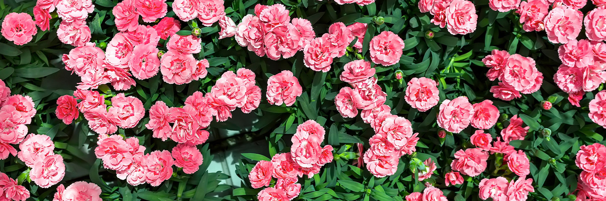

Bloom Room
Carnations
Carnations (Dianthus caryophyllus) are beloved for their frilled petals, varied colors,
and long-lasting blooms. Here's a detailed description and overview of their usage:
Description Carnations (Dianthus caryophyllus) are beloved for their frilled petals, varied colors, and long-lasting blooms.
Here's a detailed description and overview of their usage: Carnations (Dianthus caryophyllus) are beloved for their frilled
petals, varied colors, and long-lasting blooms. Here's a detailed description and overview of their usage: Carnations
(Dianthus caryophyllus) are beloved for their frilled petals, varied colors, and long-lasting blooms.
Here's a detailed description and overview of their usage:
Description
1. Appearance:
Flowers: Carnations have a distinctive, ruffled appearance with petals that can be fringed or smooth.
They come in a range of colors, including red, pink, white, yellow, purple, and even bi-colored varieties.
Blooms: The flowers can be single or double, and they typically have a strong, spicy fragrance. Blooms are often
around 2-3 inches in diameter.
Leaves and Stems: The leaves are narrow, lance-shaped, and usually dark green. The stems are sturdy and can grow
from 12 to 24 inches tall.
2. Varieties:
Standard Carnations: These are the classic variety, often used in bouquets and floral arrangements.
Miniature Carnations: Also known as spray carnations, these have smaller blooms and are often used in mixed arrangements.
Fringed Carnations: These have petals with a fringed edge, giving them a more textured appearance.
Usage
1. Ornamental:
Gardens: Carnations are popular in garden beds and borders due to their long flowering period and vibrant colors.
They thrive in well-drained soil and full sun.
Containers: They also work well in pots and containers, adding color and interest to patios and balconies.
2. Floral Arrangements:
Bouquets: Carnations are a staple in floral arrangements for their longevity and versatility. They are used in everything
from everyday bouquets to elaborate wedding and event arrangements.
Corsages and Boutonnieres: Their durability makes them ideal for corsages and boutonnieres, which are often worn at formal events.
3. Symbolism:
Occasions: Different colors of carnations can symbolize various sentiments. For example:
Red Carnations: Often symbolize admiration and love.
Pink Carnations: Represent a mother's love or a woman's admiration.
White Carnations: Signify purity and innocence, and are often used in funerals.
Historical and Cultural Symbolism: Carnations have been symbols of various causes and movements over time, including
the Portuguese Revolution and as national flowers in several countries.
4. Culinary and Herbal Uses:
Edible Petals: Some varieties of carnations have edible petals, which can be used to garnish salads or desserts.
They add a hint of spice and color.
Herbal Remedies: Though less common, carnation petals have been used in traditional herbal remedies for their purported benefits.
5. Crafting:
Dried Flowers: Carnations can be dried and used in potpourri or as decorative elements in craft projects.
6. Events and Celebrations:
Weddings: Their wide range of colors and durability make them a popular choice for wedding bouquets, centerpieces,
and other floral decorations.
Holidays: They are also used in holiday arrangements and seasonal decorations due to their long-lasting nature.
Carnations are valued for their beauty, fragrance, and versatility, making them a favored flower for many types of
floral arrangements and occasions. Their ability to bloom for extended periods and withstand handling adds to their
popularity in both professional floristry and home gardening.
